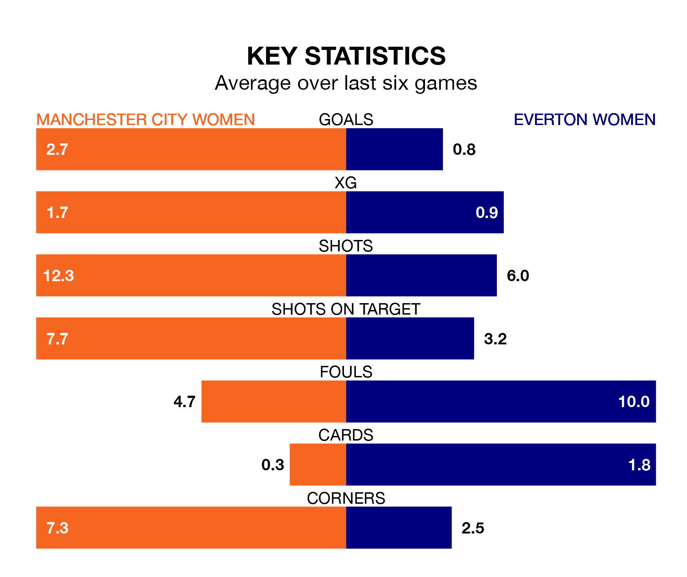

Manchester City Women host Everton Women in Saturday lunchtime's match at the Academy Stadium looking to bounce back from defeat last time out in the FA Women's Super League.
City, who sit top of the league after 14 games, fell to a 0-1 away defeat to Chelsea Women on February 16.
They face an Everton side who picked up a win in their last match, a 2-0 victory against West Ham United Women, and who sit ninth in the table.
Manchester City are in exceptional form in the FA Women's Super League, with six wins and no losses from their last six games.
With two wins and four losses over that period, Everton's form is much worse – they have taken six points from 18, compared to City's 18.
With 36 goals in 14 games so far this season, the home team are the league's second-highest scorers with 2.6 goals per game. And they are conceding fewer than average, letting in eight goals at a rate of 0.6 per game.
The Toffees, meanwhile, are below average scorers, with 0.9 goals per game, compared to a league average of 1.6. They have conceded 1.8 goals per game.
In Khadija Monifa Shaw, Manchester City have the league's most on-form striker so far this season. She has notched 14 goals in 13 appearances.
The visitors' top scorers, with three goals each, are Aurora Galli and Megan Finnigan.
In the last 10 years, Manchester City and Everton have played each other on 24 occasions. Manchester City won all of them.
On average, City scored 2.9 goals and the Toffees 0.6 in those matches.
Their last meeting was on December 17, when Manchester City won 4-1 away.
Updated: 10:08 (UTC), 23/02/24